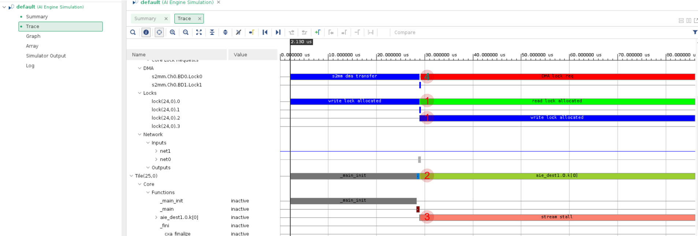

AI Engine DevelopmentSee Vitis™ Development Environment on xilinx.com See Vitis-AI™ Development Environment on xilinx.com |
AI Engine Deadlock Analysis¶
This tutorial introduces you to some common deadlock scenarios and shows you how to detect deadlocks (design hangs) in different tool flows. The methods introduced to detect and analyze deadlock issues include:
Using
eventin Vitis Analyzer to analyze design hangs.Using waveforms in hardware emulation to check AI Engine input and output activities.
Using event APIs to analyze data activities for AI Engine input and output in hardware flows.
Using
xbutil2to report AI Engine and AI Engine shim status.Using the
devmemLinux command to probe AI Engine registers.
Note: The default working directory in this step is testcase_nofifo_hang, unless explicitly stated otherwise.
Common Deadlock Scenarios¶
A deadlock is usually caused by insufficient FIFOs, or the access rate not matching between multiple FIFOs (or different branches of the same net in stream multicast). The following figure shows some deadlock scenarios:

Scenario 1: This scenario occurs when K1 tries to write to FIFO0, but the FIFO is full. K2 is still waiting for data coming from FIFO1 before consuming data from FIFO0.
Scenario 2: This scenario occurs when NET0 multicasts to multiple destinations, and the destinations are connected by stream or cascade stream (FIFO1). The NET0 branch 1 is full because K2 is waiting for data from FIFO1, but K1 is still hungry for data from NET0 branch 0 to produce data for FIFO1.
Scenario 3: This scenario occurs when K1 and K2 are connected by buffers (including RTP buffers) and streams. When K1 is trying to write data to K2 using FIFO0, K2 is still trying to acquire lock for the ping or pong buffer. K1 will not release the lock of the buffer until it finishes its current iteration.
AI Engine Deadlock Example and Analysis in AI Engine Simulator¶
The example is similar to the one used in AI Engine Execution and Measurement, except that it does not have a FIFO for the stream connection:

When the design stalls, graph::wait() and graph::end() hang. It needs to interrupt graph execution by:
Using
graph::wait(CYCLE_NUMBER): specifying the number of cycles to wait for the API to return (if the graph does not return afterCYCLE_NUMBERcycles, this API still returns immediately).Using
graph::end(CYCLE_NUMBER): specifying the number of cycles to wait for the graph to be ended (if the graph does not return afterCYCLE_NUMBERcycles, this API still ends the graph immediately).Using the
--simulation-cycle-timeout CYCLE_NUMBERoption foraiesimulator.
The CYCLE_NUMBER should be large enough for AI Engine simulator to record all the stall events, or for hardware to run into hang status.
In this example, examine
aie/graph.cpp. We wait for 10000 cycles:gr.init(); gr.run(4); gr.wait(10000);
Run AI Engine simulator using the following command:
make aiesim
Open Trace view in Vitis Analyzer by using the following command:
vitis_analyzer aiesimulator_output/default.aierun_summary

The hang occurs after the following activities:
1: Kernel
aie_dest1acquires the lock of read buffer (buf0) and write buffer (buf1).2: Kernel
aie_dest1starts.3: Kernel hangs in stream stall.
4: S2mm is waiting for kernel
aie_dest1to release bufferbuf0.
AI Engine Deadlock Detection in the Hardware Emulation Flow¶
Like AI Engine simulator, the hardware emulation flow can also dump VCD for AI Engine. To dump VCD, write AIE_DUMP_VCD=foo in a file and specify this file for the -aie-sim-options option of launch_hw_emu.sh.
It is usually helpful to view the input and output of AI Engine in the waveform. The -g option can be added to launch_hw_emu.sh to launch the XSIM waveform. The command looks like the following:
./launch_hw_emu.sh -g -aie-sim-options ./sim_options.txt
When the XSIM GUI pops up, add ai_engine_0 or the PL kernels’ signals to the waveform. Click Start in XSIM. In the Linux prompt, run the following command:
cd /mnt/sd-mmcblk0p1
./host.exe a.xclbin
After the PS code completes in Linux, check the input to the AI Engine S00_AXIS and the output from the AI Engine M00_AXIS:

After the PS receives 104 samples, the design hangs. TVALID is always High, indicating that the PL kernel mm2s is still trying to send data to the AI Engine, but TREADY from the AI Engine turns to Low, and remains Low. There are also no samples from the AI Engine to the PL in the M00_AXIS interface of the AI Engine.
Analysis of the VDC file in Vitis Analyzer is similar to analysis in AI Engine simulator. A workaround is to move the VCD file generated by the hardware emulation flow to the working directory and open it:
vitis_analyzer aiesimulator_output/default.aierun_summary
AI Engine Deadlock Detection in the Hardware Flow¶
If a deadlock does not show in the AI Engine simulator or hardware emulation flows, it might still show in the hardware flow.
The PS code to profile how much data has been transferred for the input and output is shown below:
event::handle handle = event::start_profiling(*dout, event::io_stream_running_event_count);
event::handle handle2 = event::start_profiling(*din, event::io_stream_running_event_count);
if(handle==event::invalid_handle || handle2==event::invalid_handle){
printf("ERROR:Invalid handle. Only two performance counter in a AIE-PL interface tile\n");
return 1;
}
//kernel run
auto s2mm_run = s2mm(out_bo, nullptr, OUTPUT_SIZE);//1st run for s2mm has started
auto mm2s_run = mm2s(in_bo, nullptr, OUTPUT_SIZE);
gr.run(4);
// Wait graph for some cycles
gr.wait(50000); // wait for AIE kernel to complete or at most 50000 cycles
long long data_out_count = event::read_profiling(handle);
long long data_in_count = event::read_profiling(handle2);
event::stop_profiling(handle);
event::stop_profiling(handle2);
std::cout<<"Output data received:"<<data_out_count<<std::endl;
std::cout<<"Input data sent:"<<data_in_count<<std::endl;
Note: mm2s needs to be started after event::start_profiling. Otherwise, the data transfer begins after mm2s starts, and that happens before event::start_profiling and gr.run(4).
The output is similar:
Output data received:0
Input data sent:104
From how much data has been transferred for the input and output, the status of the design can be estimated. The graph.wait(50000) in the above code can be replaced with sleep or usleep APIs to wait a certain amount of time depending on the scale of the design.
If necessary, an Integrated Logic Analyzer (ILA) can be inserted to probe the interfaces of the PL kernels to detect the AI Engine and PL kernels’ running status.
Methods to Detect AI Engine Status in Hardware Emulation and Hardware¶
This section provides details of other methods of detecting and analyzing AI Engine running status.
Using
xbutil2to report graph running status: The following command can be used to report graph running status：xbutil2 examine -r aie
`
Tip: If a design hangs in Linux, press Ctrl+Z to suspend the design and run command.
It is seen that
core[0](tile_24_1,aie_dest2) is in the statuseast_lock_stall, andcore[1](tile_25_1,aie_dest1) is in the statusstream_stall_ms0. That is to say,aie_dest1is trying to write to the consumeraie_dest2, whileaie_dest2is still trying to acquire lock to start.Tip: Cross-probe between Graph and Array view in Vitis Analyzer to understand kernels, buffers, and the locations of ports.
The following command can be used to report the events that have occurred on ports:
xbutil2 examine -r aieshim
Tile (24,0) is where the output locates, and tile (25,0) is where the input locates. It is seen that additional events numbered 75 and 76 happen in the inputs, indicating that input data is read into the AI Engine, but no output data is written.
Using
devmemto probe AI Engine registers to see AI Engine status: By using thedevmemcommand, you can read AI Engine registers to see the AI Engine internal status. The register reference can be found in the Versal ACAP AI Engine Register Reference (AM015).For example, the core status registers can be found here:

Find the absolute addresses for the kernels in the design. The status of the kernels can be read by running the following command:
root@versal-rootfs-common-2021_1:/mnt/sd-mmcblk0p1# devmem 0x2000C872004 0x00001000 root@versal-rootfs-common-2021_1:/mnt/sd-mmcblk0p1# devmem 0x2000C072004 0x00000200
Value
0x00001000indicates that it isStream_Stall_MS0, and value0x00000200indicates that it isLock_Stall_E. The analysis of the result is similar to usingxbutil2.
Conclusion¶
After completing this tutorial, you have learned how to detect and analyze design hang issues.
Revision History¶
July 2021: Initial release.
© Copyright 2021 Xilinx, Inc.
Licensed under the Apache License, Version 2.0 (the “License”); you may not use this file except in compliance with the License. You may obtain a copy of the License at
http://www.apache.org/licenses/LICENSE-2.0
Unless required by applicable law or agreed to in writing, software distributed under the License is distributed on an “AS IS” BASIS, WITHOUT WARRANTIES OR CONDITIONS OF ANY KIND, either express or implied. See the License for the specific language governing permissions and limitations under the License.